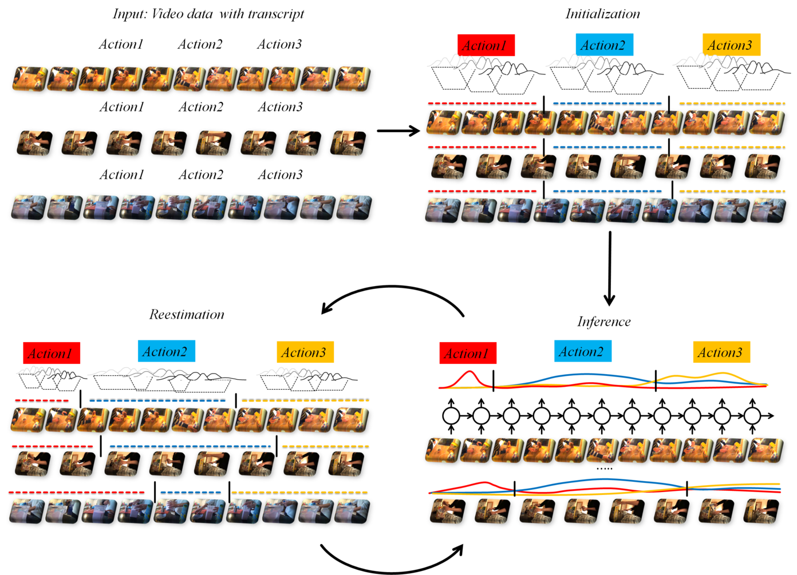

Weakly supervised learning of actions from transcriptsH. Kuehne, A. Richard, J. Gall  AbstractWe present an approach for weakly supervised learning of human actions from video transcriptions. Our system is based on the idea that, given a sequence of input data and a transcript, i.e. a list of the order the actions occur in the video, it is possible to infer the actions within the video stream, and thus, learn the related action models without the need for any frame-based annotation. Starting from the transcript information at hand, we split the given data sequences uniformly based on the number of expected actions. We then learn action models for each class by maximizing the probability that the training video sequences are generated by the action models given the sequence order as defined by the transcripts. The learned model can be used to temporally segment an unseen video with or without transcript. Results |